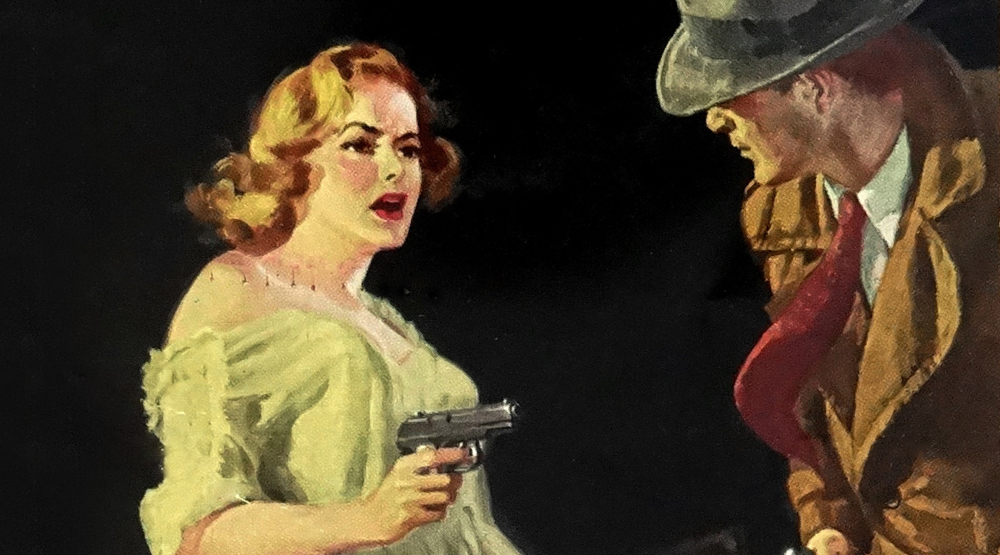
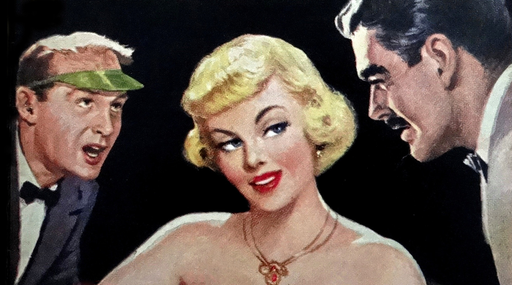

In hardboiled detective stories since the 1920s, crime, violence and characters—both good and bad—have been portrayed without a veneer of sentimentality. The term ‘hardboiled’ means tough, like an overcooked egg. The crimes are tough too, so the heroes have attitude, don’t sugar-coat the truth and never play it cute. They—and, by association, we as readers—demand the truth, no matter what it takes and how rotten it might be.

Hardboiled heroes are almost always down at heel, usually broke, often drunk and living on a diet of black coffee and smokes—hey, that sounds like most web designers I know. They have a good woman to help them stay on the straight and narrow but don’t always treat her as well as they should. When a glamorous redhead walks in the room, a hardboiled hero can’t help but turn his head. (OK, this is getting weird. I could be describing myself.)
Classic Hardboiled stories
Pulp magazines (often referred to as “the pulps”) are inexpensive fiction magazines that were published from 1896 through the 1950s. The term pulp derives from the cheap wood pulp paper on which the magazines were printed; in contrast, magazines printed on higher quality paper were called “glossies” or “slicks.” The typical pulp magazine had 128 pages with ragged, untrimmed edges.
Lurid and exploitative stories
In their first decades, pulps were most often priced at ten cents per magazine, while competing slicks cost 25 cents a piece. Pulps were the successors to the penny dreadfuls, dime novels, and short fiction magazines of the 19th century. Although many respected writers wrote for pulps, the magazines were best known for their lurid and exploitative stories and sensational cover art. Modern superhero comic books are sometimes considered descendants of ‘hero pulps;’ pulp magazines often featured illustrated novel-length stories of heroic characters, such as ‘The Shadow,’ ‘Doc Savage,’ and ‘The Phantom Detective.’
The first pulp was Frank Munsey’s revamped Argosy Magazine of 1896, with about 135,000 words (192 pages) per issue, on pulp paper with untrimmed edges, and no illustrations, even on the cover.
The steam-powered printing press had been in widespread use for some time, enabling the boom in dime novels; prior to Munsey, however, no one had combined cheap printing, cheap paper and cheap authors in a package that provided affordable entertainment to young working-class people. In six years Argosy went from a few thousand copies per month to over half a million.
Pulp magazines (often referred to as “the pulps”) are inexpensive fiction magazines that were published from 1896 through the ’50s.
Street & Smith, a dime novel and boys’ weekly publisher, was next on the market. Seeing Argosy’s success, they launched The Popular Magazine in 1903, which they billed as the “biggest magazine in the world” by virtue of its being two pages (the interior sides of the front and back cover) longer than Argosy. Due to differences in page layout however, the magazine had substantially less text than Argosy. The Popular Magazine did introduce colour covers to pulp publishing, and the magazine began to take off when the publishers in 1905 acquired the rights to serialise Ayesha, by H. Rider Haggard, a sequel to his popular novel She.
Haggard’s Lost World genre influenced several key pulp writers, including Edgar Rice Burroughs, Robert E. Howard, Talbot Mundy and Abraham Merritt. In 1907, the cover price rose to 15 cents and 30 pages were added to each issue; along with establishing a stable of authors for each magazine, this change proved successful and circulation began to approach that of Argosy.

Pulp magazines (often referred to as “the pulps”) are inexpensive fiction magazines that were published from 1896 through the ’50s.
Steam-powered printing
At their peak of popularity in the 1920s and 1930s, the most successful pulps could sell up to one million copies per issue. The most successful pulp magazines were Argosy, Adventure, Blue Book and Short Stories, collectively described by some pulp historians as “The Big Four.’ Among the best-known other titles of this period were Amazing Stories, Black Mask, Dime Detective, Flying Aces, Horror Stories, Love Story Magazine, Marvel Tales, Oriental Stories, Planet Stories, Spicy Detective, Startling Stories, Thrilling Wonder Stories, Unknown, Weird Tales and Western Story Magazine.
Although pulp magazines were primarily an American phenomenon, there were also a number of British pulp magazines published between the Edwardian era and World War II. Notable UK pulps included Pall Mall Magazine, The Novel Magazine, Cassell’s Magazine, The Story-Teller, The Sovereign Magazine, Hutchinson’s Adventure-Story and Hutchinson’s Mystery-Story. The German fantasy magazine Der Orchideengarten had a similar format to American pulp magazines, in that it was printed on rough pulp paper and heavily illustrated.
With its dark, complex plotting, stark black-and-white photography, concentration on the baseness of man, and a cynical mood sustained to its still shockingly grim conclusion, this is the prototypical film noir.
Pulp magazines (often referred to as “the pulps”) are inexpensive fiction magazines that were published from 1896 through the ’50s.
Pulp magazines (often referred to as “the pulps”) are inexpensive fiction magazines that were published from 1896 through the ’50s.Pulp magazines (often referred to as “the pulps”) are inexpensive fiction magazines that were published from 1896 through the ’50s.
Pulp magazines (often referred to as “the pulps”) are inexpensive fiction magazines that were published from 1896 through the ’50s.
Pulp magazines (often referred to as “the pulps”) are inexpensive fiction magazines that were published from 1896 through the ’50s.
Pulp magazines (often referred to as “the pulps”) are inexpensive fiction magazines that were published from 1896 through the ’50s. The term pulp derives from the cheap wood pulp paper on which the magazines were printed; in contrast, magazines printed on higher quality paper were called “glossies” or “slicks.” The typical pulp magazine had 128 pages; it was 7 inches (18 cm) wide by 10 inches (25 cm) high, and 0.5 inches (1.3 cm) thick, with ragged, untrimmed edges.
Pulp magazines (often referred to as “the pulps”) are inexpensive fiction magazines that were published from 1896 through the ’50s. The term pulp derives from the cheap wood pulp paper on which the magazines were printed; in contrast, magazines printed on higher quality paper were called “glossies” or “slicks.” The typical pulp magazine had 128 pages; it was 7 inches (18 cm) wide by 10 inches (25 cm) high, and 0.5 inches (1.3 cm) thick, with ragged, untrimmed edges.
Pulp magazines (often referred to as “the pulps”) are inexpensive fiction magazines that were published from 1896 through the ’50s. The term pulp derives from the cheap wood pulp paper on which the magazines were printed; in contrast, magazines printed on higher quality paper were called “glossies” or “slicks.” The typical pulp magazine had 128 pages; it was 7 inches (18 cm) wide by 10 inches (25 cm) high, and 0.5 inches (1.3 cm) thick, with ragged, untrimmed edges.
Pulp magazines (often referred to as “the pulps”) are inexpensive fiction magazines that were published from 1896 through the ’50s. The term pulp derives from the cheap wood pulp paper on which the magazines were printed; in contrast, magazines printed on higher quality paper were called “glossies” or “slicks.” The typical pulp magazine had 128 pages; it was 7 inches (18 cm) wide by 10 inches (25 cm) high, and 0.5 inches (1.3 cm) thick, with ragged, untrimmed edges.